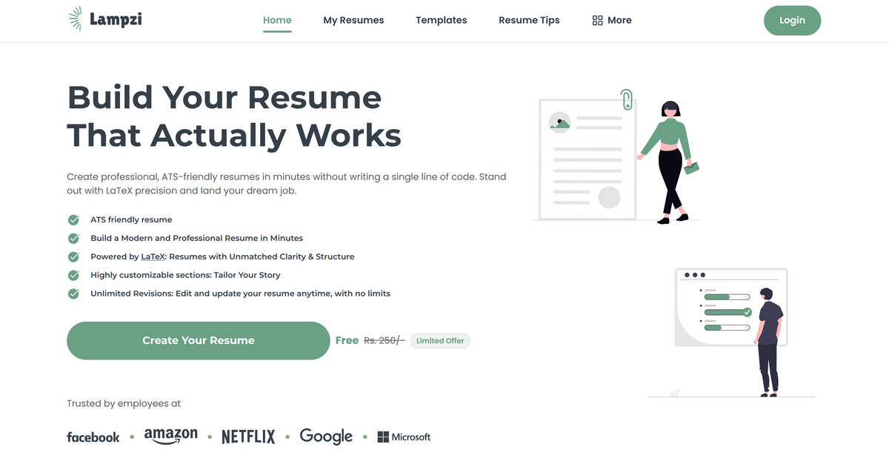
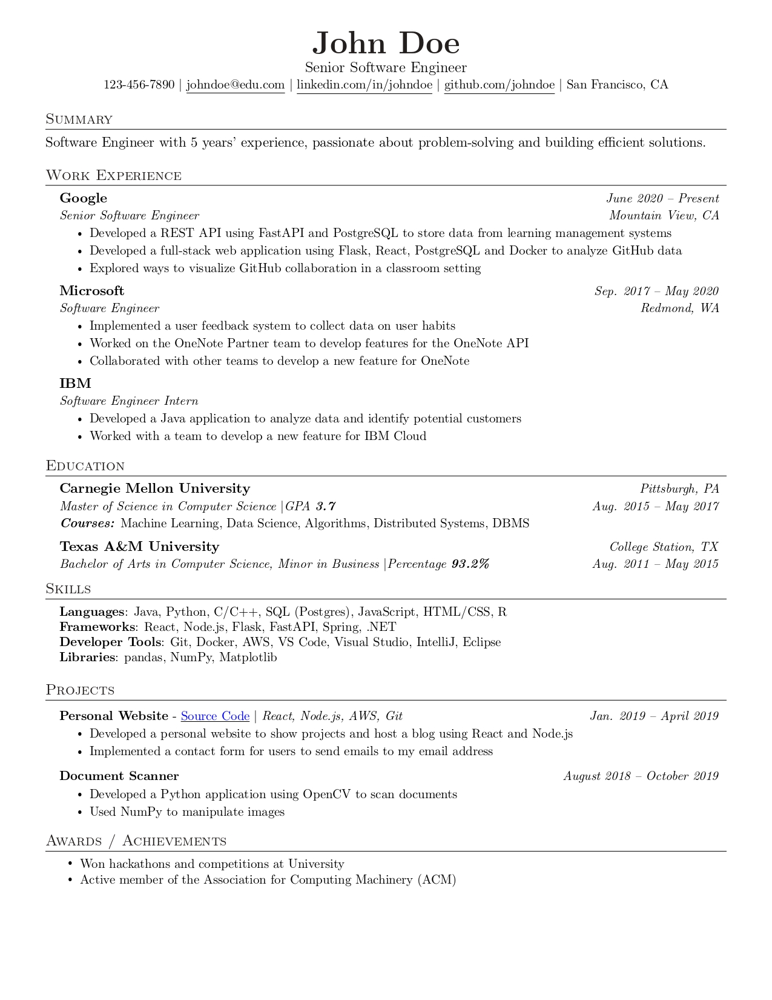
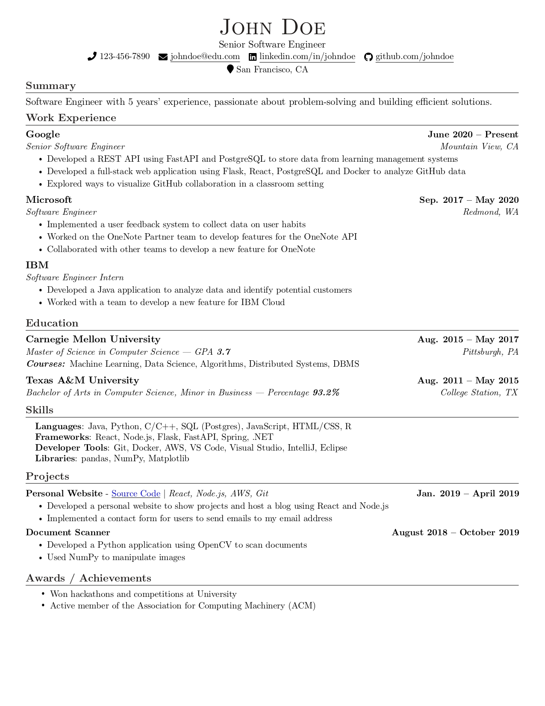
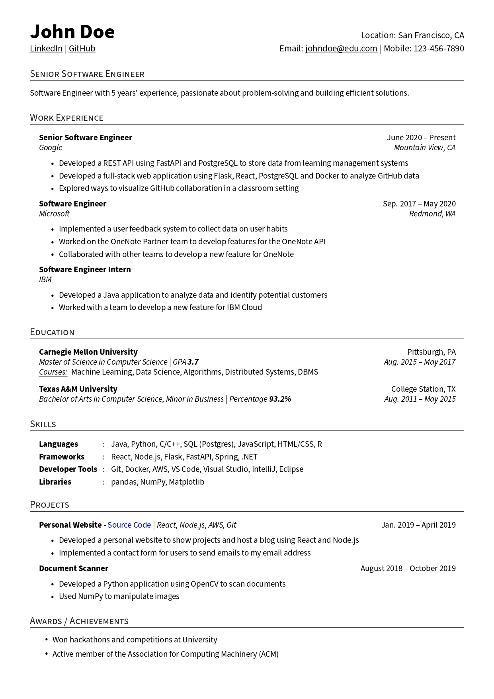
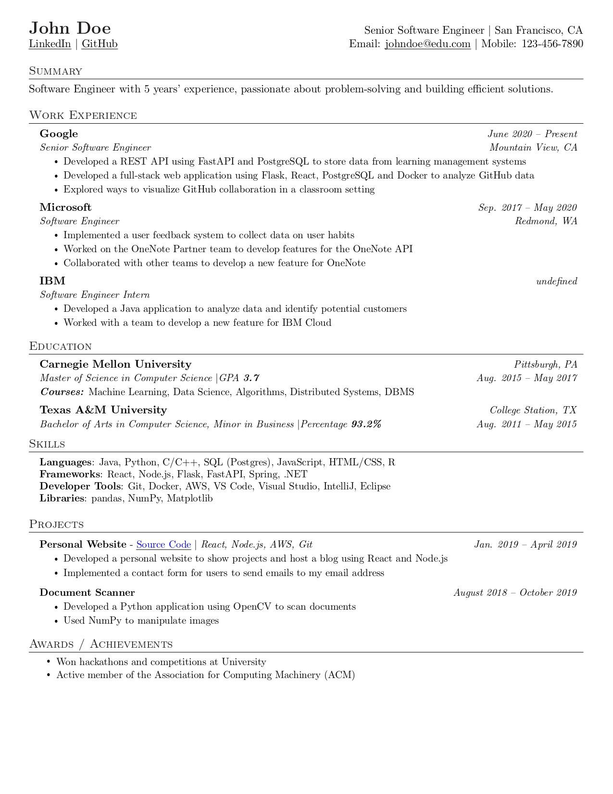
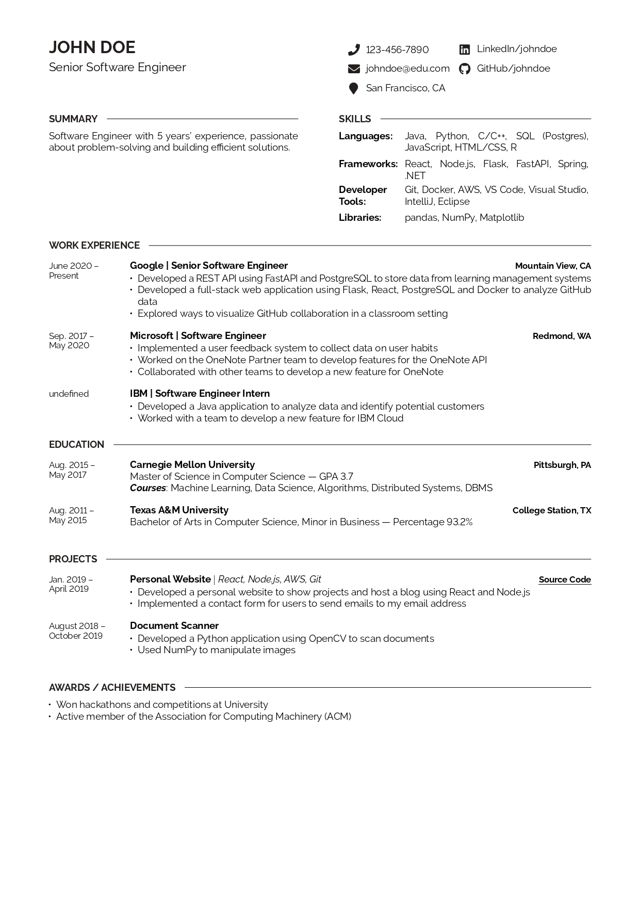
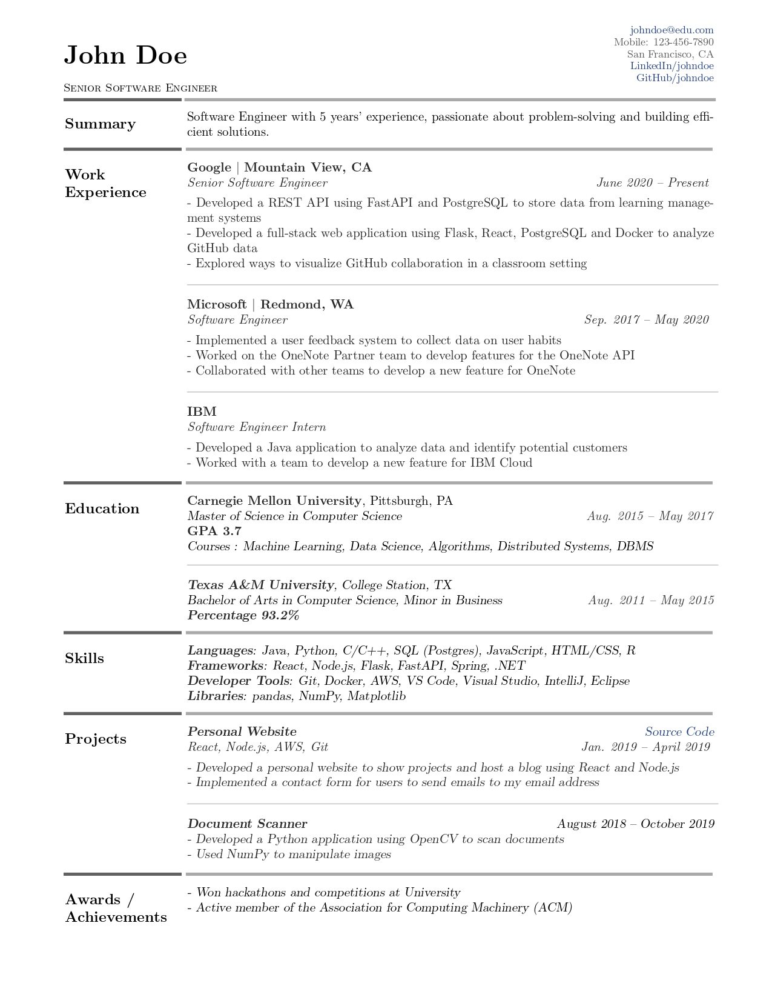

Free LaTeX Resume Templates, Built for ATS
Browse professional, ATS-friendly resume templates and build yours with the mathematical precision of LaTeX — no programming, no packages and no code syntax required.

What makes a LaTeX resume different?
A LaTeX resume is typeset rather than laid out by hand. Instead of dragging text boxes around a page, you give LaTeX your content and it applies the same mathematical spacing rules used for academic papers and books. The result is consistent margins, perfectly aligned dates and bullet points, and typography that reads as considered rather than improvised.
It also solves a problem most people never see. Applicant Tracking Systems (ATS) read the raw text of a PDF before a recruiter ever does, and design-first tools often export text as images or in multi-column tables that parsers scramble. A single-column LaTeX resume outputs clean, searchable text — which is why it tends to survive automated screening intact.
The traditional cost of LaTeX was learning it: installing a distribution, editing markup in Overleaf, and debugging compiler errors. The templates on this page skip that entirely. You pick a layout, fill in a form on Lampzi, and the LaTeX is compiled for you into a downloadable PDF — the output of LaTeX without the syntax.
Why Use a LaTeX Resume?
Struggling with margins in Word? Meet the next generation of professional resume engineering.
No-Code LaTeX, No Overleaf
Get the clean, structured look of academic LaTeX files without fighting with Overleaf compilation scripts or package errors. Fill in a guided form, and the compiler does the rest.
Built to Pass ATS
Visual editors hide text in vector formats that crash parsing algorithms. LaTeX compiles natural, searchable text, helping your document pass Workday, Greenhouse and Lever filters.
Precise Document Spacing
LaTeX balances white space mathematically. Your headings, timelines, skills lists and bullet points align consistently without the formatting shifts you get in a word processor.
Resume or Academic CV
The same editor builds a one-page resume or a longer academic CV — add publications, coursework and references, and LaTeX typesets them just as cleanly.
How the No-Code LaTeX Builder Works
Building an ATS-friendly resume from a LaTeX template has never been this straightforward.
Choose a Template
Browse recruiter-tested LaTeX templates tailored for technical, academic and business roles.
Fill in Your Details
Enter your experience, projects, education and skills into the guided form builder.
Download the PDF
The raw LaTeX is compiled behind the scenes for an instant, ATS-ready PDF download.
Free LaTeX Resume & CV Templates
Pick a layout optimized for scanning readability and clean, ATS-safe formatting.






Lampzi vs Overleaf vs Word
Why traditional builders struggle to deliver a truly ATS-friendly resume compared with LaTeX.
| Feature | Lampzi (No-Code LaTeX) | Canva / Microsoft Word | Overleaf (Raw LaTeX) |
|---|---|---|---|
| ATS parsing | ✓ Clean, searchable text | ✗ Fonts corrupt, tables break | ✓ Clean, searchable text |
| No code required | ✓ Yes (simple input forms) | ✓ Yes (visual panels) | ✗ No (requires code debugging) |
| Layout stability | ✓ Guaranteed (never shifts) | ✗ Fragile (formatting drifts) | ✓ Guaranteed (typesetting engine) |
| Typography standard | ✓ LaTeX document grade | ✗ Basic desktop fonts | ✓ LaTeX document grade |
| Mobile-friendly editing | ✓ Yes (mobile web forms) | ✓ Yes (mobile app/web) | ✗ No (code view fails on small screens) |
Frequently Asked Questions
LaTeX resume templates, ATS, and how the no-code builder works.
Yes. You can browse every LaTeX resume template here for free and start building with the no-code editor at no cost. Fill in a form, pick a layout, and download a professional PDF.
No. Unlike Overleaf, where you edit raw LaTeX and debug compiler errors, Lampzi hosts the compiler for you. There is nothing to install, no packages to import and no code to write — you fill out a guided form and the LaTeX PDF is generated instantly.
Applicant Tracking Systems parse plain, searchable text. Graphic tools such as Canva export text as vector shapes that parsers read as images, causing rejections. LaTeX compiles genuine text structures, so single-column LaTeX resumes parse cleanly in systems like Workday, Greenhouse and Lever.
Yes. The Academic template is built for longer CVs, with sections for publications, coursework, references and teaching history. A CV and a resume use the same editor — the CV simply adds more sections.
For people who want LaTeX-quality output without writing LaTeX, yes. Overleaf is a full LaTeX editor and remains the better choice if you want total manual control. Lampzi is the better choice if you want a finished, ATS-friendly resume in minutes from a form.
Yes. Sections can be reordered, renamed or hidden with a drag-and-drop panel, so you can put projects, skills or experience first and the layout adjusts automatically.